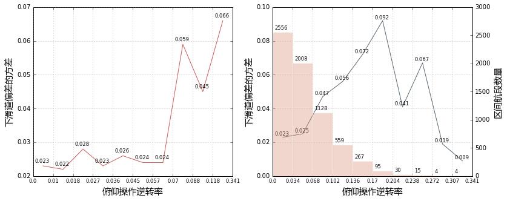
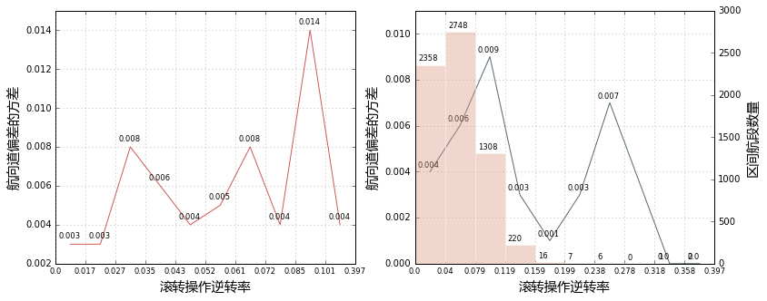
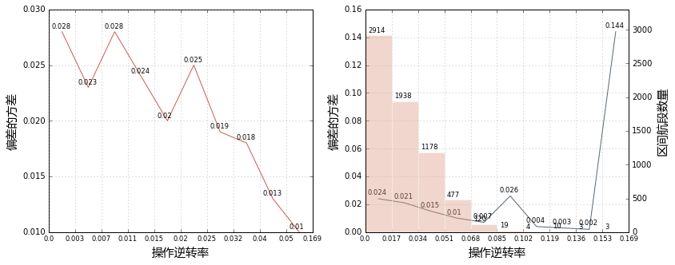
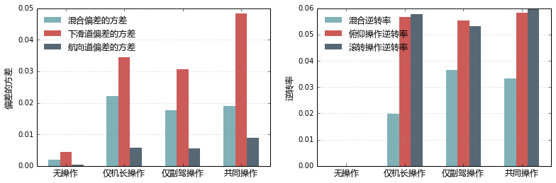

关于飞机操作的逆转率与稳定进近的研究
俯仰操作与稳定性

r=n−11i=1∑n−1I(xixi+1<0)
其中n为样本数，I(.)为指示函数
滚转操作与稳定性

- 俯仰操作逆转率计算公式与俯仰一样
- 结论： 暂时无法得出滚转操作航向道稳定性的联系
混合操作与稳定性

r=n−11i=1∑n−1I(I(√xi+12+yi+12>0)−I(√xi2+yi2>0)≠0)
其中n为样本数，I(.)为指示函数，xi为俯仰操作量，yi为滚转操作量
控制者与稳定性

- 总体来看，航向道比下滑道更容易控制；
- 共同操作时，下滑道稳定性差；
- 无操作的情况下稳定性最好，原因估计是稳定性条件好因此不必做任何操作；
- 总体来看，无论谁控制，在俯仰和滚转上的操作频率相差不大；
- 机长的混合逆转率显著少于副驾和共同，但是三者的俯仰、滚转逆转率相差不大，可能原因为
机长的操作次数不多，但是频率更快。